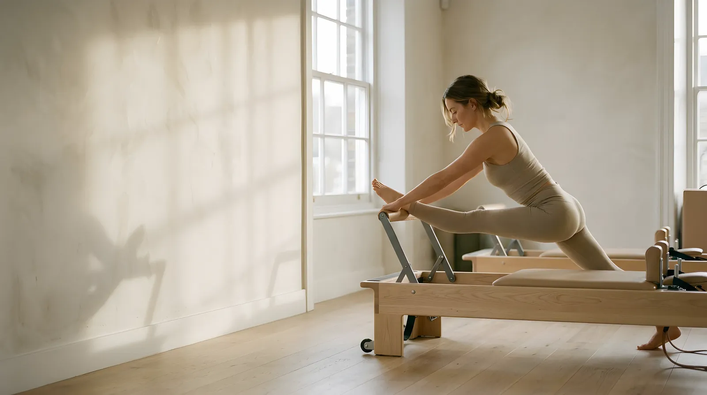
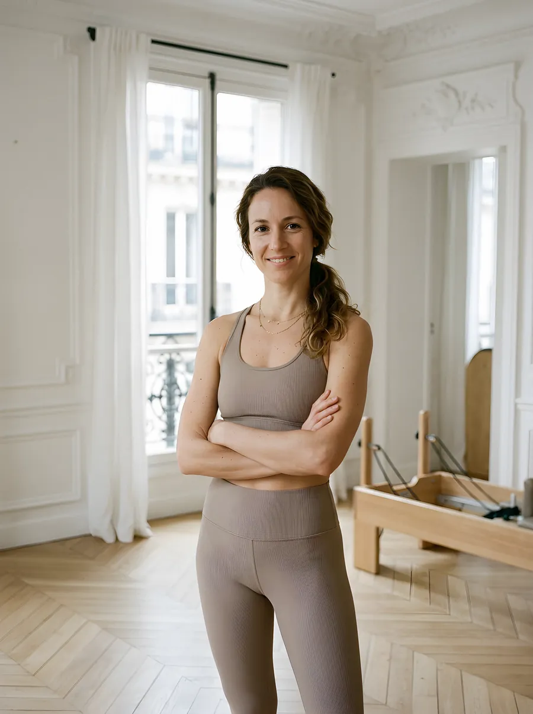
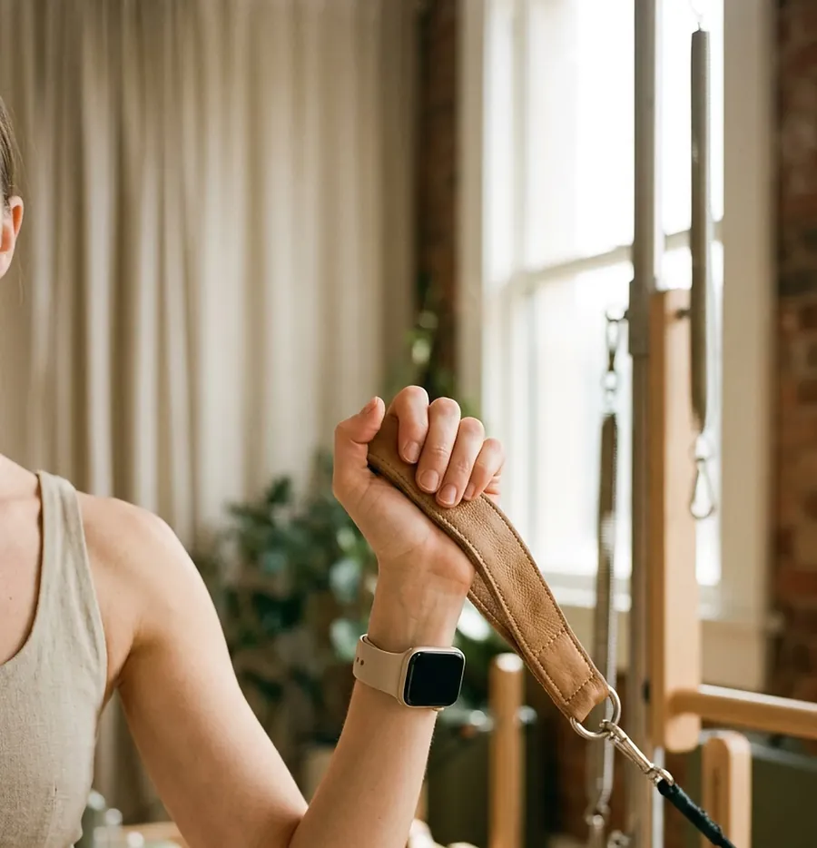

A · Chosen
Exhale
One morning in natural light. Quiet luxury, warm oat tones, everything moving on an 8-second breath.
Concept project · 2026
A website for an imagined boutique reformer Pilates studio in Le Marais, Paris. The goal: make a small studio feel as calm and considered as the class itself, and turn that calm into first bookings.

01 Brief
Hale is a small studio for people who want strength without noise: professionals in their 30s–40s who live in the Marais and value attention over intensity. Groups are capped at six, every newcomer starts with Foundations, and the first class costs €25.
The site has one job: help a first-time visitor understand the studio in under a minute and book a Foundations class, on a phone, without friction.
02 Balance
Wellness sells on trust and atmosphere, so the wow had to serve calm, never compete with it. No 3D, no aggressive effects: the impression comes from light, photography and a single motion idea — the breath.
03 Directions
Before designing, I researched Paris and London boutique studios and built three directions that genuinely differ in mood, type and story.
A · Chosen
One morning in natural light. Quiet luxury, warm oat tones, everything moving on an 8-second breath.
B
The precision of the reformer: rails, springs, the line of the spine. Architectural and cool.
C
Evening classes in amber light and shadow. The boldest of the three, dark and intimate.
04 Design system
Instrument Serif carries the calm voice of the brand; Hanken Grotesk keeps schedules and prices crisp. Headlines stay upright — emphasis is shown with colour only, like an exhale. The full system lives in Figma as variables, text styles and components.
Aa
Instrument Serif
Display, headings, numbers, quotes
Aa
Hanken Grotesk
Body, labels, buttons · 300 / 400 / 500
05 Art direction
Every image was generated with AI and then art-directed as a single shoot: the same chevron parquet, Parisian mouldings and French windows in every frame, soft morning light, real-looking people. Images were upscaled, given film grain and served as responsive WebP.




06 Motion
One idea, applied everywhere: inhale, exhale. Smooth scrolling with Lenis and GSAP, only transform and opacity, and a full reduced-motion version.
07 Booking UX
A seven-day schedule with in-page booking, a sticky “First class €25” bar on mobile, and a single clear path for newcomers: every first visit is a Foundations class. Prices are in euros, packs stay valid for twelve months, and nothing asks for a sign-up before it is needed.
08 Quality
Lighthouse, desktop. Mobile performance 89, zero layout shift, tested from 320 to 1920px wide.
99
Performance
100
Accessibility
100
Best practices
100
SEO
Experience it